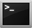

|
Unix de base |
Commandes |
Options les plus fréquentes | |
|---|---|---|---|
| Changer répertoire courant | cd | ||
| Afficher contenu répertoire | ls | ||
| Nom répertoire courant | pwd | ||
| Créer répertoire | mkdir | ||
| Détruire répertoire | rmdir | ||
| Changer mot de passe | passwd | ||
| Fin de session | exit, logout | ||
| Copier des fichiers ou des répertoires | cp | ||
| Effacer des fichiers | rm | -f : ne demande pas de confirmation avant d'effacer
-r : efface récursivement les fichiers ainsi que les répertoires | |
| Permet l'installation et le retrait de packages | apt-get | update : met à jour la liste des packages disponibles en fonction des sources fournies ;
upgrade : met à jour tous les packages déjà installés ; dist-upgrade : pareil au précédent mais permet également de passer à une version n+1, simplement, de la distribution ; install : installe un ou plusieurs packages ; remove : supprime un ou plusieurs packages ; clean : efface du disque dur les packages téléchargés. | |
| affiche les informations utilisateur et de groupe pour un utilisateur spécifié | id | ||
| Activer le service SSH sous Ubuntu |
|---|
| apt-get install openssh-server |
| Identifier le kernel utilisé |
uname -r |
| Identifier les kernels installés |
dpkg -l | grep -Ei "linux-headers|linux-image" |
| Supprimer ceux qui ne sont plus utilisés (dans le cas présent ci-dessous : 3.8.0-19) |
sudo apt-get remove linux-headers-3.8.0-19 linux-image-3.8.0-19 linux-headers-3.8.0-19-generic linux-image-3.8.0-19-generic |
|  Nettoyer sa partition /boot de ses anciens kernels |
$: sudo su $: apt-get install byobu |
$: sudo purge-old-kernels --keep 3 -qy |
Connaitre l'occupation disques par partitions
$: df -h |
1. Éditez le fichier ‘hosts’ :
nano /etc/hosts
Le fichier devrait ressembler à peu de chose à ceci :
127.0.0.1 localhost
127.0.1.1 un_hostname
Changer « un_hostname » par le nouveau hostname / nom de l’ordinateur.
2. Éditez le fichier ‘hostname’ :
nano /etc/hostname
Ce fichier ne contient que votre hostname / nom d’ordinateur, alors changez le à nouveau comme précédemment,
mais assurez vous bien que c’est le même nom que dans le fichier ‘/etc/hosts’.
3. Maintenant redémarrez les services hostname et réseau :
sudo service hostname restart
sudo service networking restart
-C /"destination" |
Modification des droits lors de l'installation de Molden
chown root.root molden5.7/ chown root.root -R molden5.7/ |
- Appuyez simultanément sur les touches Alt et F2 pour afficher le lanceur d'application. - Saisissez alors la commande suivante : gnome-system-monitor et cliquez sur le bouton Lancer. - Le moniteur système est alors affiché. Ouvrez l'onglet Processus. - Les processus en cours d'exécution sont affichés. - Vous pouvez fermer un processus récalcitrant en le sélectionnant et cliquant sur le bouton Terminer le processus. - Cliquez sur Terminer le processus pour confirmer l'opération et fermer l'application. |
ouvrez une console puis tapez:
sudo -i |
ouvrez une console puis tapez:
dpkg-reconfigure ocsinventory-agent |
https://www.auto-multiple-choice.net/download-ubuntu.fr
Installer AMC QCM et toutes ses dépendances.
ouvrez une console puis tapez:
sudo apt-get install auto-multiple-choice |
https://doc.ubuntu-fr.org/ls_couleur
Editez le fichier ~/.bashrc et y ajoutez : alias ls='ls --color'
| Couleur | Signification |
| Couleur par défaut du shell | Fichier standard |
| Bleu | Répertoire |
| Cyan | Lien symbolique |
| Jaune | Fichier FIFO et block |
| Magenta | Socket, fichier image (.jpg, .gif, .png, .tiff) et audio (.mp3, .ogg, .wav) |
| Rouge | Archive (.tar, .zip, .deb, .rpm) |
| Vert | Exécutable |
Here are a couple of things you can do: Editors + Code A lot of editors have syntax highlighting support. vim and emacs have it on by default. You can also enable it under nano. You can also syntax highlight code on the terminal by using Pygments as a command-line tool. grep grep --color=auto highlights all matches. You can also use export GREP_OPTIONS='--color=auto' to make it persistent without an alias. If you use --color=always, it'll use colour even when piping, which confuses things. ls ls --color=always Colors specified by: export LS_COLORS='rs=0:di=01;34:ln=01;36:mh=00:pi=40;33' (hint: dircolors can be helpful) PS1 You can set your PS1 (shell prompt) to use colours. For example: PS1='\e[33;1m\u@\h: \e[31m\W\e[0m\$ ' Will produce a PS1 like: [yellow]lucas@ubuntu: [red]~[normal]$ You can get really creative with this. As an idea: PS1='\e[s\e[0;0H\e[1;33m\h \t\n\e[1;32mThis is my computer\e[u[\u@\h: \w]\$ ' Puts a bar at the top of your terminal with some random info. (For best results, also use alias clear="echo -e '\e[2J\n\n'".) Getting Rid of Escape Sequences If something is stuck outputting colour when you don't want it to, I use this sed line to strip the escape sequences: sed "s/\[^[[0-9;]*[a-zA-Z]//gi" If you want a more authentic experience, you can also get rid of lines starting with \e[8m, which instructs the terminal to hide the text. (Not widely supported.) sed "s/^\[^[8m.*$//gi" Also note that those ^[s should be actual, literal ^[s. You can type them by pressing ^V^[ in bash, that is Ctrl + V, Ctrl + [.
{kind=link}
{kind=link}